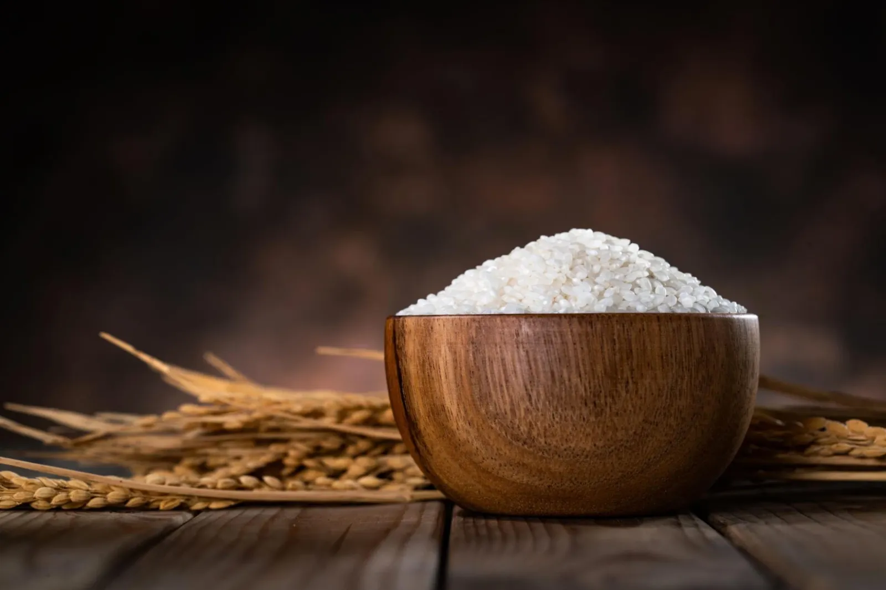
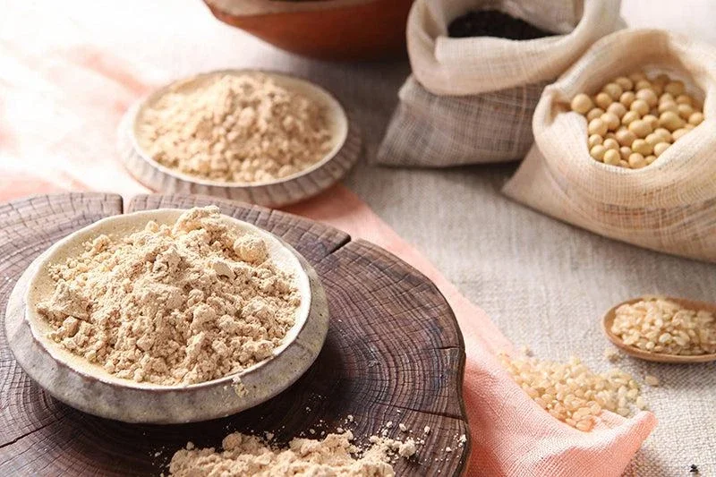

두두쌀
우리 집 밥맛에 맞춘 쌀
도정도와 찹쌀 비율을 취향에 맞게.
입맛 선택 → 예약 주문 → 맞춤 도정
선택 예시
- A 부드럽게
- 백미 · 찹쌀 10%
- B 균형
- 7분도 · 찹쌀 10%
- C 건강하게
- 5분도와 현미 30% · 찹쌀 0%
두두쌀과 두두미숫가루는 미리 만들어 쌓아두기보다, 주문을 받은 뒤 취향에 맞춰 도정하고 볶아 만드는 방식을 지향합니다.

두두쌀
도정도와 찹쌀 비율을 취향에 맞게.
입맛 선택 → 예약 주문 → 맞춤 도정

두두미숫가루
콩 함량을 조절해 고소함과 단백질 비율을 취향에 맞게.
배합 선택 → 예약 주문 → 주문 후 볶음·분쇄·포장
쌀은 도정도와 찹쌀 비율, 미숫가루는 콩 비율과 배합을 고릅니다.
고른 내용으로 주문을 남깁니다.
주문에 맞춰 도정하거나 볶고 갈아 담아 보냅니다.